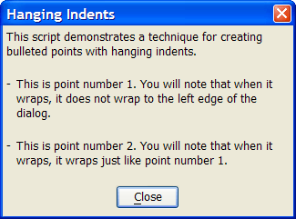

Static Text Syntax
Syntax
{' [ %Directives% ] Text [ ? Enabled ] }
|
Argument |
Type |
Description |
|
%Directives% |
C |
|
|
Text |
C |
The text to display. |
|
Enabled |
L |
Optional. See Enabled Syntax. |
Description
The {'} syntax allows you to insert static text anywhere on an Xdialog.
Limitations
Desktop applications only
Example
|
format = <<%dlg% {'Hello World }{sp=3} %dlg% ui_dlg_box("Simple Xdialog", format) |

This example shows how to format text with a hanging indent. The left margin is defined by the position of the first character after the {' sequence.
|
ui_dlg_box("Hanging Indents",<<%dlg% {wrap=50} This script demonstrates a technique for creating bulleted points with hanging indents.; {lf}; - {'This is point number 1. You will note that when it wraps, it does not wrap to the left edge of the dialog.}; {lf}; - {'This is point number 2. You will note that when it wraps, it wraps just like point number 1.}; {lf}; {justify=center} <10&Close!close>; %dlg%) |

See Also
Colored Static Text, Xdialog Commands, Xdialog Language Directives and Operators